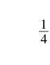
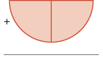
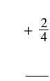
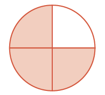
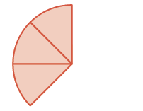
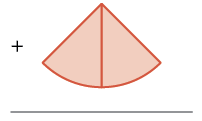
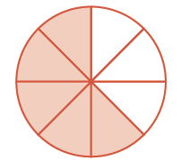
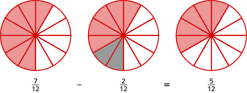
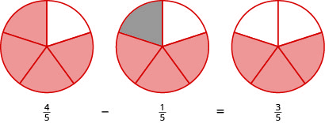

একই হরযুক্ত ভগ্নাংশের যোগ ও বিয়োগ
উৎস-অনুগত সম্পূর্ণ মডিউল · A00 / m81288। সম্পূর্ণ বইয়ের অনুবাদ এখনও চলছে। গণিত, প্রশ্ন, উপস্থিত সমাধান, মূল পরিচয়চিহ্ন ও ছবি সংরক্ষিত। সূত্রের শব্দলেবেল ও ছবি-বিবরণ বাংলায় অনূদিত। যেসব প্রশ্নের উত্তর মূল উৎসে নেই, এখানে সেগুলিতে নতুন উত্তর যোগ করা হয়নি। মূল ছবিতে থাকা ভুল/ইংরেজি লেবেলের ক্ষেত্রে বাংলা বিবরণ ও সম্পাদকীয় সতর্কতা পড়ো। স্বাধীন বাংলা ভাষা/শিক্ষক, শিক্ষার্থী ও সহায়ক-প্রযুক্তি পর্যালোচনা বাকি। বাইরের উৎস-লিঙ্কে ইন্টারনেট প্রয়োজন।
এই পাঠের শেষে তুমি পারবে:
- মডেলের সাহায্যে ভগ্নাংশের যোগ দেখাতে
- একই হরযুক্ত ভগ্নাংশ যোগ করতে
- মডেলের সাহায্যে ভগ্নাংশের বিয়োগ দেখাতে
- একই হরযুক্ত ভগ্নাংশ বিয়োগ করতে
মডেলের সাহায্যে ভগ্নাংশের যোগ
ছবিতে কতগুলি মার্কিন কোয়ার্টার মুদ্রা আছে? একটি কোয়ার্টারের সঙ্গে টি কোয়ার্টার যোগ করলে মোট টি কোয়ার্টার হয়।
তিনটি মার্কিন কোয়ার্টার মুদ্রা: বাঁদিকে একটি, ডানদিকে দুটি। প্রতিটি মুদ্রার মূল্য এক মার্কিন ডলারের এক চতুর্থাংশ।
মনে রেখো, একটি কোয়ার্টারের মূল্য এক মার্কিন ডলারের এক চতুর্থাংশ। তাই এক, দুই ও তিনটি কোয়ার্টারের মূল্য যথাক্রমে এক ডলারের এক, দুই ও তিন চতুর্থাংশ। মুদ্রার ছবিটি থেকে দেখা যাচ্ছে,
এবার ভগ্নাংশের বৃত্ত দিয়ে একই যোগের একটি মডেল তৈরি করো। অর্থাৎ একই মাপের গোটা বৃত্তের সমান অংশগুলি একত্র করে যোগটি দেখাও:
| গোটা বৃত্তের অংশের একটি টুকরো দিয়ে শুরু করো। | লাল সীমানাযুক্ত হালকা কমলা রঙের একটি চতুর্থাংশ-বৃত্ত। এটি গোটা বৃত্তের চারটি সমান ভাগের একটি। |
 এক চতুর্থাংশ ভগ্নাংশ; লব ১, হর ৪। |
| এর সঙ্গে গোটা বৃত্তের অংশের আরও দুটি টুকরো যোগ করো। |  যোগচিহ্নের ডানদিকে দুটি চতুর্থাংশ-বৃত্ত পাশাপাশি মিলে একটি অর্ধবৃত্ত তৈরি করেছে। দুটি অংশই হালকা কমলা রঙের; নীচে যোগের আড়াআড়ি রেখা। |
 যোগচিহ্নের পরে দুই চতুর্থাংশ ভগ্নাংশ; লব ২, হর ৪। এর নীচে যোগের আড়াআড়ি রেখা। |
| মোট হল গোটা বৃত্তের অংশ। |  চারটি সমান ভাগে বিভক্ত বৃত্তের তিনটি ভাগ হালকা কমলা রঙের, একটি সাদা। রঙ করা অংশ গোটা বৃত্তের তিন চতুর্থাংশ। |
তিন চতুর্থাংশ ভগ্নাংশ; লব ৩, হর ৪। |
তাই আবার দেখা যাচ্ছে,
অনুশীলন · এই প্রশ্নের লিঙ্ক
মডেলের সাহায্যে যোগফল নির্ণয় করো:
সমাধান
| গোটা বৃত্তের অংশের তিনটি টুকরো দিয়ে শুরু করো। |  লাল সীমানাযুক্ত হালকা কমলা রঙের তিনটি সমান বৃত্তখণ্ড পাশাপাশি আছে। প্রতিটি খণ্ড গোটা বৃত্তের এক অষ্টমাংশ; তিনটি মিলে তিন অষ্টমাংশ। |
তিন অষ্টমাংশ ভগ্নাংশ; লব ৩, হর ৮। |
| এর সঙ্গে গোটা বৃত্তের অংশের দুটি টুকরো যোগ করো। |  যোগচিহ্নের ডানদিকে হালকা কমলা রঙের দুটি সমান বৃত্তখণ্ড পাশাপাশি আছে। প্রতিটি খণ্ড গোটা বৃত্তের এক অষ্টমাংশ; নীচে যোগের আড়াআড়ি রেখা। |
যোগচিহ্নের পরে দুই অষ্টমাংশ ভগ্নাংশ; লব ২, হর ৮। এর নীচে যোগের আড়াআড়ি রেখা। |
| এখন গোটা বৃত্তের অংশের মোট কতটি টুকরো আছে? |  আটটি সমান ভাগে বিভক্ত বৃত্তের পাঁচটি ভাগ হালকা কমলা রঙের, তিনটি সাদা। রঙ করা অংশ গোটা বৃত্তের পাঁচ অষ্টমাংশ। |
পাঁচ অষ্টমাংশ ভগ্নাংশ; লব ৫, হর ৮। |
এখানে গোটা বৃত্তের অংশের পাঁচটি টুকরো আছে, অর্থাৎ মোট পাঁচ অষ্টমাংশ। মডেলটি থেকে দেখা যাচ্ছে,
একই হরযুক্ত ভগ্নাংশের যোগ
উদাহরণ [fs-id1852374] থেকে দেখা যায়, একই মাপের অংশ যোগ করতে শুধু অংশগুলির সংখ্যা যোগ করতে হয়। এখানে একই মাপের অংশ বলতে বোঝায়, ভগ্নাংশগুলির হর একই।
অনুশীলন · এই প্রশ্নের লিঙ্ক
যোগফল নির্ণয় করো:
সমাধান
| লবগুলি যোগ করো। যোগফলটিকে লবে বসাও এবং হর অপরিবর্তিত রাখো। | |
| সরল করো। |
অনুশীলন · এই প্রশ্নের লিঙ্ক
যোগফল নির্ণয় করো:
সমাধান
| লবগুলি যোগ করো। যোগফলটিকে লবে বসাও এবং হর অপরিবর্তিত রাখো। |
লক্ষ করো, এই ভগ্নাংশটিকে আর সরল করা যায় না। লবের ও সদৃশ পদ নয়; তাই এদের যোগ করে একটি পদে লেখা যায় না। আবার, পুরো লব ও হর থেকে বাদ দেওয়ার মতো সাধারণ গুণনীয়কও এখানে নেই।
অনুশীলন · এই প্রশ্নের লিঙ্ক
হরের চলটির মান শূন্য নয় ধরে যোগফল নির্ণয় করো:
সমাধান
প্রথমে ভগ্নাংশটির ঋণাত্মক চিহ্ন লবে নিয়ে আবার লিখি। এখানে হর শূন্য নয়।
| প্রথম ভগ্নাংশটির ঋণাত্মক চিহ্ন লবে নিয়ে আবার লেখো। | |
| লবগুলি যোগ করো। যোগফলটিকে লবে বসাও এবং হর অপরিবর্তিত রাখো। | |
| লব সরল করো। | |
| ঋণাত্মক চিহ্নটি ভগ্নাংশের আগে নিয়ে আবার লেখো। |
অনুশীলন · এই প্রশ্নের লিঙ্ক
যোগফল নির্ণয় করো:
সমাধান
| লবগুলি যোগ করো। যোগফলটিকে লবে বসাও এবং হর অপরিবর্তিত রাখো। | |
| সদৃশ পদগুলি যোগ করো। |
অনুশীলন · এই প্রশ্নের লিঙ্ক
যোগফল নির্ণয় করো:
সমাধান
| লবগুলি যোগ করো। যোগফলটিকে লবে বসাও এবং হর অপরিবর্তিত রাখো। | |
| যোগ করো। | |
| ভগ্নাংশটিকে লঘিষ্ঠ আকারে লেখো। |
মডেলের সাহায্যে ভগ্নাংশের বিয়োগ
একই হরের দুটি ভগ্নাংশ বিয়োগ করার পদ্ধতি ভগ্নাংশ যোগ করার পদ্ধতির অনেকটা মতোই। ধরা যাক, একটি পিৎজাকে টি সমান টুকরো করা হয়েছে। রাতের খাবারে তার পাঁচটি টুকরো খাওয়া হল। তাহলে বাক্সে সাতটি টুকরো, অর্থাৎ গোটা পিৎজার অংশ বাকি রইল। লিওনার্দো বাকি টুকরোগুলির মধ্যে টি, অর্থাৎ গোটা পিৎজার অংশ খেলে আর কতটা বাকি থাকবে? তখন টি টুকরো, অর্থাৎ গোটা পিৎজার অংশ বাকি থাকবে।
এবার ভগ্নাংশের বৃত্ত দিয়ে একই বিয়োগের একটি মডেল তৈরি করো। অর্থাৎ একই মাপের গোটা বৃত্তের সমান অংশগুলি থেকে কয়েকটি সরিয়ে বিয়োগটি দেখাও:
গোটা বৃত্তের অংশের সাতটি টুকরো দিয়ে শুরু করো। সেখান থেকে গোটা বৃত্তের অংশের দুটি টুকরো সরিয়ে নাও। বারোটি সমান ভাগের কতটি বাকি রইল?

তিনটি একই মাপের বৃত্ত দিয়ে বিয়োগের ধাপ দেখানো হয়েছে। প্রতিটি বৃত্ত বারোটি সমান ভাগে বিভক্ত। প্রথম বৃত্তে সাতটি ভাগ লালচে রঙের। মাঝের বৃত্তে সেই সাতটির মধ্যে সরিয়ে নেওয়ার দুটি ভাগ ধূসর, বাকি পাঁচটি লালচে। শেষ বৃত্তে ধূসর ভাগ দুটিও সাদা করা হয়েছে; পাঁচটি ভাগ লালচে রঙের রয়ে গেছে। নীচে লেখা: লব ৭, হর ১২-এর ভগ্নাংশ থেকে লব ২, হর ১২-এর ভগ্নাংশ বিয়োগ করলে লব ৫, হর ১২-এর ভগ্নাংশ পাওয়া যায়।
আবারও গোটা বৃত্তের বারোটি সমান ভাগের পাঁচটি বাকি রইল, অর্থাৎ
অনুশীলন · এই প্রশ্নের লিঙ্ক
ভগ্নাংশের বৃত্তের সাহায্যে বিয়োগফল নির্ণয় করো:
সমাধান
গোটা বৃত্তের অংশের চারটি টুকরো দিয়ে শুরু করো। সেখান থেকে গোটা বৃত্তের অংশের একটি টুকরো সরিয়ে নাও। পাঁচটি সমান ভাগের কতটি বাকি আছে তা গুনে দেখো। গোটা বৃত্তের অংশের তিনটি টুকরো বাকি আছে।

তিনটি একই মাপের বৃত্ত দিয়ে বিয়োগের ধাপ দেখানো হয়েছে। প্রতিটি বৃত্ত পাঁচটি সমান ভাগে বিভক্ত। প্রথম বৃত্তে চারটি ভাগ লালচে রঙের। মাঝের বৃত্তে সেই চারটির মধ্যে সরিয়ে নেওয়ার একটি ভাগ ধূসর, বাকি তিনটি লালচে। শেষ বৃত্তে ধূসর ভাগটিও সাদা করা হয়েছে; তিনটি ভাগ লালচে রঙের রয়ে গেছে। নীচে লেখা: লব ৪, হর ৫-এর ভগ্নাংশ থেকে লব ১, হর ৫-এর ভগ্নাংশ বিয়োগ করলে লব ৩, হর ৫-এর ভগ্নাংশ পাওয়া যায়।
একই হরযুক্ত ভগ্নাংশের বিয়োগ
ভগ্নাংশগুলির হর একই হলে, তাদের যোগ করার পদ্ধতির মতোই বিয়োগ করা যায়।
অনুশীলন · এই প্রশ্নের লিঙ্ক
বিয়োগফল নির্ণয় করো:
সমাধান
| প্রথম লব থেকে দ্বিতীয় লব বিয়োগ করো। বিয়োগফলকে লব হিসেবে লেখো এবং হর একই রাখো। | |
| লব সরল করো। | |
| লব ও হরকে একই সাধারণ গুণনীয়ক দিয়ে ভাগ করে ভগ্নাংশটি লঘিষ্ঠ আকারে লেখো। |
অনুশীলন · এই প্রশ্নের লিঙ্ক
বিয়োগফল নির্ণয় করো:
সমাধান
| প্রথম লব থেকে দ্বিতীয় লব বিয়োগ করো। বিয়োগফলকে লব হিসেবে লেখো এবং হর একই রাখো। |
লবের পদ দুটি সদৃশ নয়, তাই একত্র করা যায় না। এখানে লব ও হরে এমন কোনো সাধারণ গুণনীয়কও নেই যা বাদ দিয়ে আরও সরল করা যায়; তাই ভগ্নাংশটি এই আকারেই থাকে।
অনুশীলন · এই প্রশ্নের লিঙ্ক
x শূন্য নয় ধরে নিয়ে বিয়োগফল নির্ণয় করো:
সমাধান
মনে রাখো, ভগ্নাংশটিকে এভাবেও লেখা যায়:
| প্রথম লব থেকে দ্বিতীয় লব বিয়োগ করো। | |
| সরল করো। | |
| ঋণাত্মক চিহ্নটি পুরো ভগ্নাংশের সামনে রেখে লেখো। |
এবার এমন একটি উদাহরণ করি, যেখানে যোগ ও বিয়োগ দুটিই আছে।
অনুশীলন · এই প্রশ্নের লিঙ্ক
সরল করো:
সমাধান
| যোগ ও বিয়োগের চিহ্নগুলি অপরিবর্তিত রেখে লবগুলি একসঙ্গে লেখো এবং হর একই রাখো। | |
| বাঁ দিক থেকে ডান দিকে হিসাব করে লব সরল করো। | |
| লবের বিয়োগটি করো। | |
| ঋণাত্মক চিহ্নটি পুরো ভগ্নাংশের সামনে রেখে লেখো। |
মূল ধারণা
- ভগ্নাংশের যোগ
- যদি এবং সংখ্যাগুলির জন্য হয়, তাহলে ।
- একই হরের দুটি ভগ্নাংশ যোগ করতে লব দুটির যোগফলকে লবের স্থানে বসাও এবং হর একই রাখো। এই হর শূন্য হতে পারে না।
- ভগ্নাংশের বিয়োগ
- যদি এবং সংখ্যাগুলির জন্য হয়, তাহলে ।
- একই হরের দুটি ভগ্নাংশ বিয়োগ করতে প্রথম ভগ্নাংশের লব থেকে দ্বিতীয় ভগ্নাংশের লব বিয়োগ করো। বিয়োগফলকে লবের স্থানে বসাও এবং হর একই রাখো। এই হর শূন্য হতে পারে না।
অনুশীলনে দক্ষতা বাড়ে
মডেলের সাহায্যে ভগ্নাংশের যোগ
নীচের অনুশীলনীগুলিতে মডেলের সাহায্যে ভগ্নাংশগুলি যোগ করো। তোমার মডেলটি বোঝাতে একটি চিত্র আঁকো। প্রতিটি ক্ষেত্রে একই মাপের গোটা বস্তুর সমান অংশ ব্যবহার করো।
অনুশীলন · এই প্রশ্নের লিঙ্ক
অনুশীলন · এই প্রশ্নের লিঙ্ক
উৎসে প্রদত্ত উত্তর

একটি বৃত্ত দশটি সমান ভাগে বিভক্ত। দশটির মধ্যে সাতটি ভাগ রং করা আছে।
অনুশীলন · এই প্রশ্নের লিঙ্ক
অনুশীলন · এই প্রশ্নের লিঙ্ক
উৎসে প্রদত্ত উত্তর

একটি বৃত্ত আটটি সমান ভাগে বিভক্ত। আটটির মধ্যে ছয়টি ভাগ রং করা আছে।
একই হরযুক্ত ভগ্নাংশের যোগ
নীচের অনুশীলনীগুলিতে প্রতিটি যোগফল নির্ণয় করো। প্রতিটি ভগ্নাংশের হর শূন্য নয় ধরে নাও।
অনুশীলন · এই প্রশ্নের লিঙ্ক
অনুশীলন · এই প্রশ্নের লিঙ্ক
অনুশীলন · এই প্রশ্নের লিঙ্ক
অনুশীলন · এই প্রশ্নের লিঙ্ক
অনুশীলন · এই প্রশ্নের লিঙ্ক
অনুশীলন · এই প্রশ্নের লিঙ্ক
অনুশীলন · এই প্রশ্নের লিঙ্ক
অনুশীলন · এই প্রশ্নের লিঙ্ক
অনুশীলন · এই প্রশ্নের লিঙ্ক
অনুশীলন · এই প্রশ্নের লিঙ্ক
মডেলের সাহায্যে ভগ্নাংশের বিয়োগ
নীচের অনুশীলনীগুলিতে মডেলের সাহায্যে ভগ্নাংশগুলি বিয়োগ করো। তোমার মডেলটি বোঝাতে একটি চিত্র আঁকো। প্রতিটি ক্ষেত্রে একই মাপের গোটা বস্তুর সমান অংশ ব্যবহার করো।
অনুশীলন · এই প্রশ্নের লিঙ্ক
অনুশীলন · এই প্রশ্নের লিঙ্ক
উৎসে প্রদত্ত উত্তর

পাশাপাশি তিনটি একই মাপের বৃত্ত; প্রতিটি ছয়টি সমান ভাগে বিভক্ত। বাঁ দিকের বৃত্তে পাঁচটি ভাগ, মাঝের বৃত্তে দুটি ভাগ এবং ডান দিকের বৃত্তে তিনটি ভাগ রং করা আছে। শেষ বৃত্তের রং করা অংশ গোটা বৃত্তের অর্ধেক।
একই হরযুক্ত ভগ্নাংশের বিয়োগ
নীচের অনুশীলনীগুলিতে বিয়োগফল নির্ণয় করো। প্রতিটি ভগ্নাংশের হর শূন্য নয় ধরে নাও।
অনুশীলন · এই প্রশ্নের লিঙ্ক
অনুশীলন · এই প্রশ্নের লিঙ্ক
অনুশীলন · এই প্রশ্নের লিঙ্ক
অনুশীলন · এই প্রশ্নের লিঙ্ক
অনুশীলন · এই প্রশ্নের লিঙ্ক
অনুশীলন · এই প্রশ্নের লিঙ্ক
অনুশীলন · এই প্রশ্নের লিঙ্ক
অনুশীলন · এই প্রশ্নের লিঙ্ক
অনুশীলন · এই প্রশ্নের লিঙ্ক
অনুশীলন · এই প্রশ্নের লিঙ্ক
অনুশীলন · এই প্রশ্নের লিঙ্ক
অনুশীলন · এই প্রশ্নের লিঙ্ক
বিভিন্ন প্রক্রিয়ার অনুশীলন
নীচের অনুশীলনীগুলিতে নির্দেশিত গাণিতিক প্রক্রিয়াটি সম্পন্ন করো এবং উত্তর লঘিষ্ঠ আকারে লেখো। প্রতিটি ভগ্নাংশের হর শূন্য নয় ধরে নাও।
অনুশীলন · এই প্রশ্নের লিঙ্ক
অনুশীলন · এই প্রশ্নের লিঙ্ক
অনুশীলন · এই প্রশ্নের লিঙ্ক
অনুশীলন · এই প্রশ্নের লিঙ্ক
রোজকার জীবনে গণিত
অনুশীলন · এই প্রশ্নের লিঙ্ক
বাদাম-কিশমিশের মিশ্রণ — জেকব বাদাম ও কিশমিশ একসঙ্গে মিশিয়ে খাবার তৈরি করছে। তার কাছে বাদাম আছে পাউন্ড এবং কিশমিশ আছে পাউন্ড। সে কত পাউন্ড মিশ্রণ তৈরি করতে পারবে?
অনুশীলন · এই প্রশ্নের লিঙ্ক
রান্না — জ্যানেট যে খাবার তৈরি করছে, তার রেসিপিতে দরকার কাপ ময়দা। তার কাছে আছে মাত্র কাপ ময়দা। বাকি ময়দা সে পাশের বাড়ির প্রতিবেশীর কাছ থেকে ধার চাইবে। তাকে কত কাপ ময়দা ধার নিতে হবে?
উৎসে প্রদত্ত উত্তর
কাপ
লিখে প্রকাশ করো
অনুশীলন · এই প্রশ্নের লিঙ্ক
গ্রেগের হাত থেকে ড্রিলের বিট রাখার বাক্সটি পড়ে যায়। বিট অর্থাৎ ড্রিল দিয়ে ছিদ্র করার শলাকাগুলির মধ্যে তিনটি বেরিয়ে পড়ে। বাক্সে প্রতিটি বিটের জন্য আলাদা খাঁজ আছে; খাঁজগুলি বিটের মাপের ছোট থেকে বড় ক্রমে সাজানো। পড়ে যাওয়া বিটগুলি গ্রেগকে আবার ফাঁকা খাঁজে রাখতে হবে। তিনটি বিট কোন কোন খাঁজে যাবে? কীভাবে বুঝলে, ব্যাখ্যা করো।
বাক্সে থাকা বিটগুলির মাপ: , , ___, ___, , , ___, , , ।
পড়ে যাওয়া বিটগুলির মাপ: , , ।
অনুশীলন · এই প্রশ্নের লিঙ্ক
একটি অনুষ্ঠানের পরে লুপের কাছে চিজ পিৎজার অংশ, পেপারোনি পিৎজার অংশ এবং সবজির পিৎজার অংশ বাকি আছে। সব টুকরো কি টি পিৎজার বাক্সে রাখা যাবে? তোমার যুক্তি ব্যাখ্যা করো। সম্পাদকীয় শর্ত: পিৎজাগুলি একই মাপের এবং বাক্সের ধারণক্ষমতা একটি গোটা পিৎজার সমপরিমাণ বলে ধরে নাও।
উৎসে প্রদত্ত উত্তর
না। অবশিষ্ট পিৎজার পরিমাণগুলি যোগ করলে মোট হয় একটি গোটা পিৎজার অংশ, যা 1-এর বেশি। (ব্যাখ্যা বিভিন্ন রকম হতে পারে।)
নিজের শেখা যাচাই করো
ⓐ অনুশীলনীগুলি শেষ করার পরে, এই পাঠের শেখার উদ্দেশ্যগুলি কতটা আয়ত্ত করেছ, তা যাচাই করতে এই তালিকাটি ব্যবহার করো।
নিজের শেখা যাচাই করার তালিকা। প্রতিটি কাজের জন্য তিনটি অবস্থার একটি বেছে নাও: ‘আত্মবিশ্বাসের সঙ্গে পারি’, ‘কিছুটা সাহায্য পেলে পারি’, অথবা ‘না, বুঝতে পারিনি’। কাজগুলি হলো: মডেলের সাহায্যে ভগ্নাংশের যোগ দেখানো; একই হরযুক্ত ভগ্নাংশ যোগ করা; মডেলের সাহায্যে ভগ্নাংশের বিয়োগ দেখানো; এবং একই হরযুক্ত ভগ্নাংশ বিয়োগ করা।
ⓑ তালিকায় দেওয়া তোমার উত্তরগুলি বিবেচনা করে বলো, এই পাঠ কতটা আয়ত্ত করেছ বলে মনে হচ্ছে? 1–10-এর মধ্যে নিজেকে কত নম্বর দেবে? আরও ভালোভাবে শিখতে তুমি কী করতে পারো?